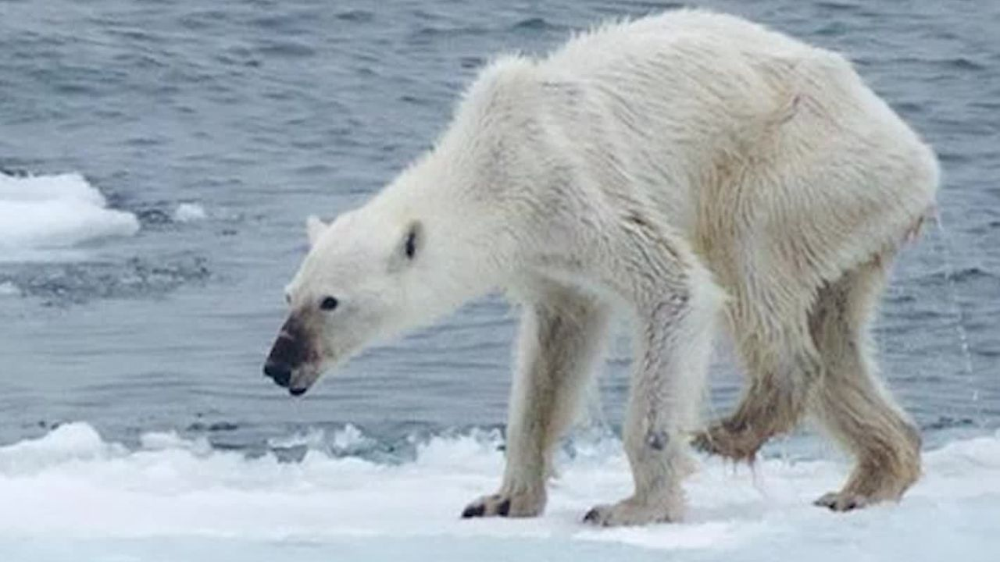

2. A polar bear skin is actually black
Beneath all that thick fur, polar bears have jet black skin. The polar bear’s fur is also translucent,
and
only appears white because it reflects visible light.
This is how a polar bear swims.
3. They can swim constantly for days at a time
As well as reaching speeds of up to 6mph in the water, polar bears can swim for long distances and
steadily for many hours to get from one piece of ice to another. Their large paws are specially
adapted
for swimming, which they will use to paddle through the water while holding their hind legs flat
like a
rudder.
4. Less than 2% of polar bear hunts are successful
Although about half of a polar bear’s life is spent hunting for food, their hunts are rarely
successful. A polar bear’s main prey consists of ringed seals and bearded seals, which they hunt in
a variety of ways. Either by breaking into pupping dens, waiting at breathing holes or at the
water’s edge, or stalking seals that have hauled out to rest on the ice. Besides catching seals,
polar bears will also scavenge carcasses or settle for small mammals, birds, eggs and vegetation.
5. Scientists can extract polar bear DNA from just their footprints
This project, which has been several years in the making by WWF and MIX Research focuses on sampling
polar bear footprints by scraping snow from polar bear tracks, to extract environmental DNA (eDNA)
and gain valuable insights for conservation efforts. By examining the eDNA in the footprints, they
were able to figure out the bear’s diet.

6. They face more threats than climate change
While climate change remains the greatest threat to the polar bear’s survival, that is not all that
the predator is up against. The oil and gas industry is turning its eyes to the arctic, and with it
comes the potential risks of habitat destruction from oil exploration work. Contact with oil spills
can reduce the insulating effect of a bear’s fur requiring them to use more energy to get warm, and
can poison them if ingested. Polar bears can also be exposed to toxic chemicals such as pesticides
through their prey, which can affect a bear's biological functioning and ability to reproduce.
Melting sea ice from climate change has increased human-polar bear conflicts when hungry polar bears
go searching for food in the summer. Fortunately, people are learning to adapt to the polar bear's
presence and take preventative measures to reduce the risk of conflict. Learn more about the threats
to polar bears and how we are working to solve them.